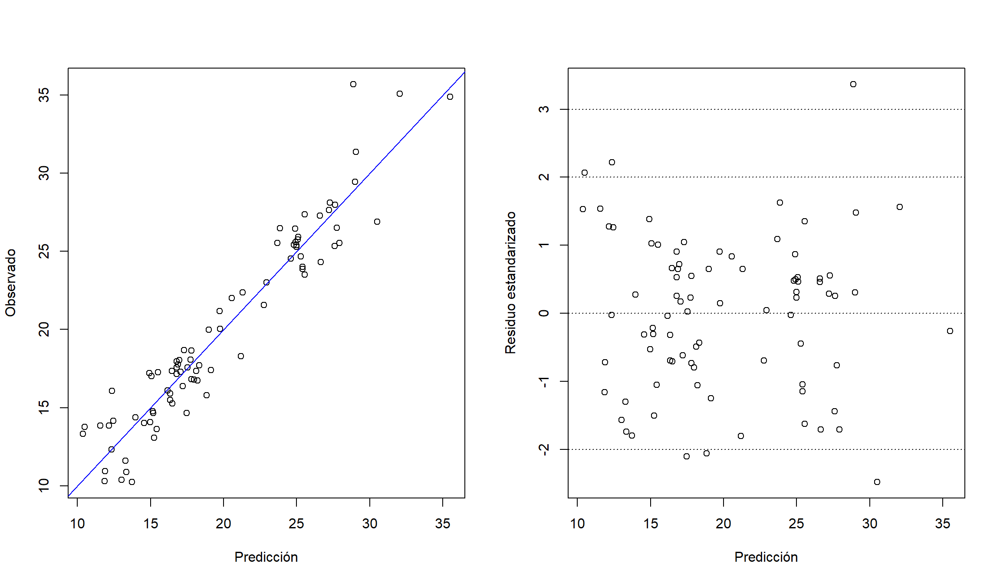
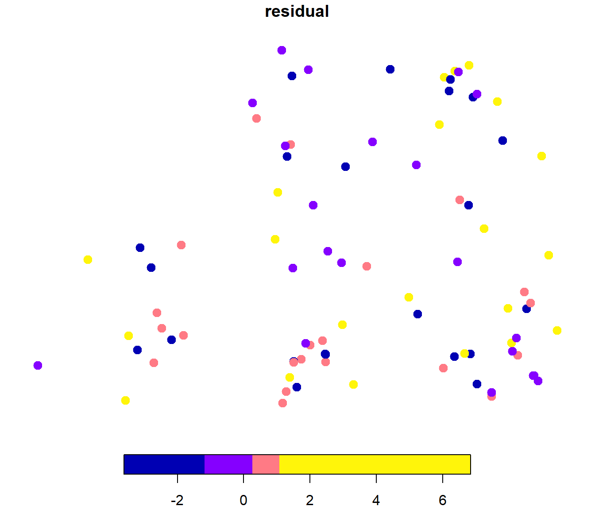
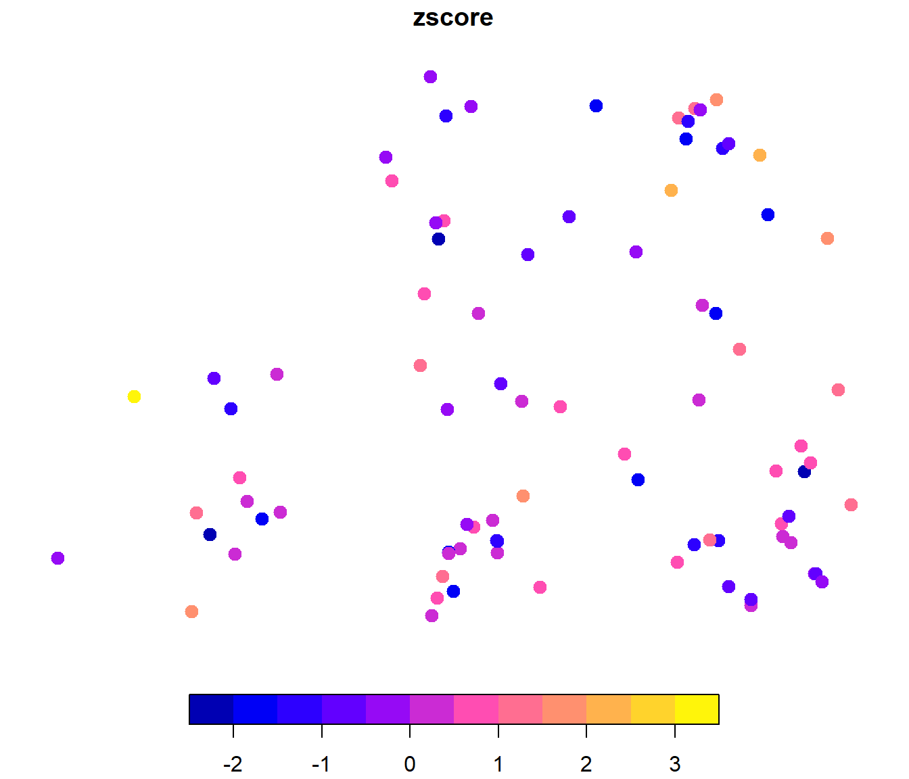
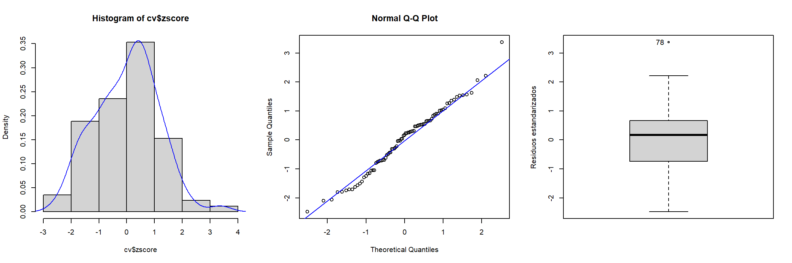

4.6 Validación cruzada del modelo ajustado
El método de validación cruzada es la técnica normalmente utilizada en geoestadística para diagnosticar si un modelo (de tendencia y variograma) describe adecuadamente la variabilidad espacial de los datos (ver e.g. Cressie, 1993, Sección 2.6.4). Si se asume que la tendencia es constante, permitiría verificar si el modelo de variograma describe adecuadamente la dependencia espacial de los datos. Aunque también es utilizada para otros fines (ver e.g. Isaaks y Srivastava, 1989, Capítulo 15), entre ellos: comparar distintas hipótesis sobre el modelo geoestadístico (tipo de modelo, vecindarios, etc.), detectar observaciones atípicas o incluso para la estimación de los parámetros del variograma. La idea básica es eliminar una parte de los datos y utilizar el resto de los datos para predecir los datos eliminados, entonces el error de predicción puede deducirse del valor que se predice menos el observado; repitiendo esto sobre varios conjuntos de datos se tiene una idea sobre la variabilidad del error de predicción. En su versión más simple, validación cruzada dejando uno fuera (Leave-one-out cross-validation, LOOCV), para cada observación de la muestra se obtiene una predicción empleando el resto de observaciones (para más detalles, ver e.g. Fernández-Casal et al., 2021, Sección 1.3.3). En el caso de datos geoestadísticos no sólo interesa analizar las predicciones, en general son también de interés las estimaciones del error cuadrático de predicción (varianza kriging).
Supongamos que \(\hat{Z}_{-j}(\mathbf{s}_{j})\) es un predictor de \(Z(\mathbf{s}_{j})\) obtenido, utilizando alguno de los métodos de predicción espacial, a partir de \(\left\{ Z(\mathbf{s}_{i}):i\neq j\right\}\) y el variograma ajustado \(2\gamma(\cdot ,\hat{\boldsymbol{\theta}})\) (calculado utilizando todos los datos), y que \(\sigma_{-j}^2 (\mathbf{s}_{j})\) es el correspondiente error en media cuadrática de predicción. Hay varias formas de medir la aproximación de las predicciones a los verdaderos valores, por ejemplo:
La media de los errores tipificados (dimensionless mean error) \[\text{DME} =\dfrac{1}{n} \sum\limits_{j=1}^{n}\left( \hat{Z}_{-j}(\mathbf{s}_{j})-Z(\mathbf{s}_{j})\right) /\sigma_{-j}(\mathbf{s}_{j})\] debería ser próxima a cero. Este no es un criterio muy adecuado (sobre todo en el caso del KO) ya que los predictores kriging son insesgados independientemente del modelo de variograma utilizado (ver e.g. Yakowitz y Szidarovski, 1985).
El error cuadrático medio adimensional (dimensionless mean squared error): \[\text{DMSE} =\sqrt{\dfrac{1}{n} \sum\limits_{j=1}^{n}\left( \left( \hat{Z}_{-j}(\mathbf{s}_{j})-Z(\mathbf{s}_{j})\right) /\sigma_{-j}(\mathbf{s}_{j})\right)^2 }\] debería ser próximo a uno. El valor de este estadístico puede interpretarse como una medida de la concordancia entre las varianzas kriging y las varianzas observadas. Teniendo en cuenta que si reescalamos el variograma multiplicándolo por una constante, las predicciones con el variograma reescalado son idénticas y las varianzas kriging serán las mismas multiplicadas por esa constante. Podemos pensar en “corregir” las varianzas kriging obtenidas con un modelo de variograma estimado de forma que el DMSE sea igual a 1, multiplicándolas por \(\text{DMSE}^2\).
El error cuadrático medio (mean squared error): \[\text{MSE} =\dfrac{1}{n} \sum\limits_{j=1}^{n}\left( \hat{Z}_{-j}(\mathbf{s}_{j})-Z(\mathbf{s}_{j})\right)^2\] debería ser pequeño. El principal problema de este estadístico es que asigna igual peso a todos los datos y no tiene en cuenta las posiciones espaciales. Por lo general los errores son mayores en los puntos más alejados del resto de los datos (observaciones exteriores) y pueden tener un efecto dominante en la media global. Se podría pensar en calcular una media ponderada con pesos inversamente proporcionales a la varianza kriging o a alguna medida de la distancia de una posición al resto de los datos.
Diversos criterios gráficos pueden ser también de interés como herramientas de diagnóstico, como un gráfico de tallo-hojas de los residuos tipificados o gráficos de normalidad.
Después de la validación cruzada del variograma, si esta resultó ser satisfactoria, se puede confiar en que la predicción basada en el modelo ajustado es aproximadamente óptima y que las estimaciones del error en media cuadrática de predicción son bastante buenas (i.e. el modelo ajustado no es muy incorrecto).
Uno de los principales problemas de esta técnica es el elevado coste computacional (Cressie, 1993, p. 104), sin embargo, se han desarrollado métodos(normalmente ignorados) que permiten realizar la validación cruzada de un modelo de variograma de forma rápida y sencilla (ver Fernández-Casal, 2003c, Sección 4.4). Alternativamente se podría emplear validación cruzada en k grupos (k-fold cross-validation), considerando típicamente 10 o 5 grupos27.
La validación cruzada en gstat está implementada en la función krige.cv().
La sintaxis de esta función es casi idéntica a la de la función krige() (Sección 4.4, salvo que incluye un argumento nfold en lugar de newdata:
krige.cv(formula, locations, model, nfold = nrow(data), ...)El resultado (un data.frame o un objeto del mismo tipo que locations), además de las predicciones y varianzas kriging de validación cruzada (en las posiciones de observación), contiene los componentes observed (valor observado), residual (residuos), zscore (residuos divididos por el error estándar kriging) y fold (grupo de validación cruzada).
Como ejemplo continuaremos con los datos del acuífero Wolfcamp (en s100 se tiene un ejemplo adicional empleando KO).
Como ya se comentó, la función krige.cv() emplea LOOCV por defecto y puede requerir de mucho tiempo de computación (no implementa eficientemente esta técnica):
system.time(cv <- krige.cv(formula = head ~ lon + lat, locations = aquifer_sf,
model = fit))## user system elapsed
## 0.61 0.00 0.61str(cv)## Classes 'sf' and 'data.frame': 85 obs. of 7 variables:
## $ var1.pred: num 15 23.5 22.9 24.6 17 ...
## $ var1.var : num 3.08 2.85 2.32 2.81 2.05 ...
## $ observed : num 14.6 25.5 21.6 24.6 17.6 ...
## $ residual : num -0.3357 1.9962 -1.3101 -0.0792 0.5478 ...
## $ zscore : num -0.1914 1.1821 -0.8608 -0.0472 0.3829 ...
## $ fold : int 1 2 3 4 5 6 7 8 9 10 ...
## $ geometry :sfc_POINT of length 85; first list element: 'XY' num 42.8 127.6
## - attr(*, "sf_column")= chr "geometry"
## - attr(*, "agr")= Factor w/ 3 levels "constant","aggregate",..: NA NA NA NA NA NA
## ..- attr(*, "names")= chr [1:6] "var1.pred" "var1.var" "observed" "residual" ...Si el número de observaciones es grande puede ser preferible emplear k-fold CV (y como la partición en grupos es aleatoria se recomendaría fijar previamente la semilla de aleatorización):
set.seed(1)
system.time(cv <- krige.cv(formula = head ~ lon + lat, locations = aquifer_sf,
model = fit, nfold = 10))## user system elapsed
## 0.06 0.00 0.06Como ya se comentó, podemos considerar distintos estadísticos, por ejemplo los implementados en la siguiente función (los tres últimos tienen en cuenta la estimación de la varianza kriging):
summary_cv <- function(cv.data, na.rm = FALSE,
tol = sqrt(.Machine$double.eps)) {
err <- cv.data$residual # Errores
obs <- cv.data$observed
z <- cv.data$zscore
w <- 1/pmax(cv.data$var1.var, tol) # Ponderación según varianza kriging
if(na.rm) {
is.a <- !is.na(err)
err <- err[is.a]
obs <- obs[is.a]
z <- z[is.a]
w <- w[is.a]
}
perr <- 100*err/pmax(obs, tol) # Errores porcentuales
return(c(
# Medidas de error tradicionales
me = mean(err), # Error medio
rmse = sqrt(mean(err^2)), # Raíz del error cuadrático medio
mae = mean(abs(err)), # Error absoluto medio
mpe = mean(perr), # Error porcentual medio
mape = mean(abs(perr)), # Error porcentual absoluto medio
r.squared = 1 - sum(err^2)/sum((obs - mean(obs))^2), # Pseudo R-cuadrado
# Medidas de error que tienen en cuenta la varianza kriging
dme = mean(z), # Error estandarizado medio
dmse = sqrt(mean(z^2)), # Error cuadrático medio adimensional
rwmse = sqrt(weighted.mean(err^2, w)) # Raíz del ECM ponderado
))
}
summary_cv(cv)## me rmse mae mpe mape r.squared
## 0.058039856 1.788446500 1.407874022 -0.615720059 7.852363328 0.913398424
## dme dmse rwmse
## 0.001337332 1.118978878 1.665958815Estas medidas podrían emplearse para seleccionar modelos (de tendencia y variograma), y también para ayudar a establecer los parámetros del vecindario para kriging local.
Para detectar datos atípicos, o problemas con el modelo, podemos generar distintos gráficos. Por ejemplo, gráficos de dispersión de valores observados o residuos estándarizados frente a predicciones:
old_par <- par(mfrow = c(1, 2))
plot(observed ~ var1.pred, data = cv, xlab = "Predicción", ylab = "Observado")
abline(a = 0, b = 1, col = "blue")
plot(zscore ~ var1.pred, data = cv, xlab = "Predicción", ylab = "Residuo estandarizado")
abline(h = c(-3, -2, 0, 2, 3), lty = 3)
par(old_par)Gráficos con la distribución espacial de los residuos:
plot(cv["residual"], pch = 20, cex = 2, breaks = "quantile", nbreaks = 4)
plot(cv["zscore"], pch = 20, cex = 2)
Además de los gráficos estándar para analizar la distribución de los residuos estándarizados o detectar atípicos:
# Histograma
old_par <- par(mfrow = c(1, 3))
hist(cv$zscore, freq = FALSE)
lines(density(cv$zscore), col = "blue")
# Gráfico de normalidad
qqnorm(cv$zscore)
qqline(cv$zscore, col = "blue")
# Boxplot
car::Boxplot(cv$zscore, ylab = "Residuos estandarizados")
## [1] 78par(old_par)LOOCV sería un caso particular considerando un número de grupos igual al número de observaciones. La partición en k-fold CV se suele realizar al azar. Hay que tener en cuenta la aleatoriedad al emplear k-fold CV, algo que no ocurre con LOOCV.↩︎